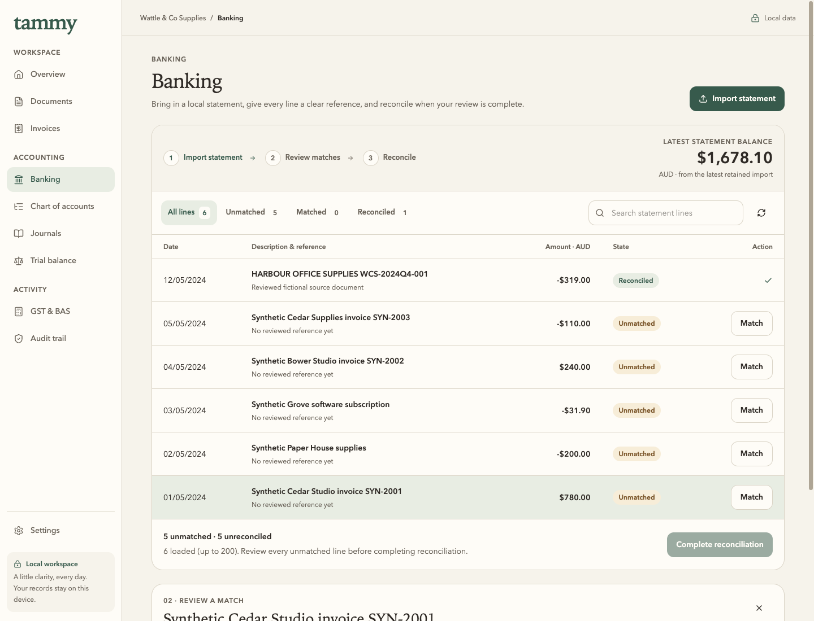
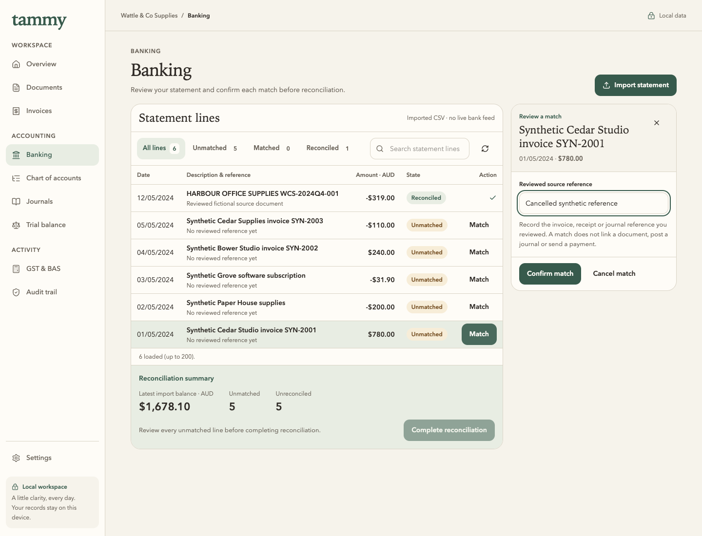
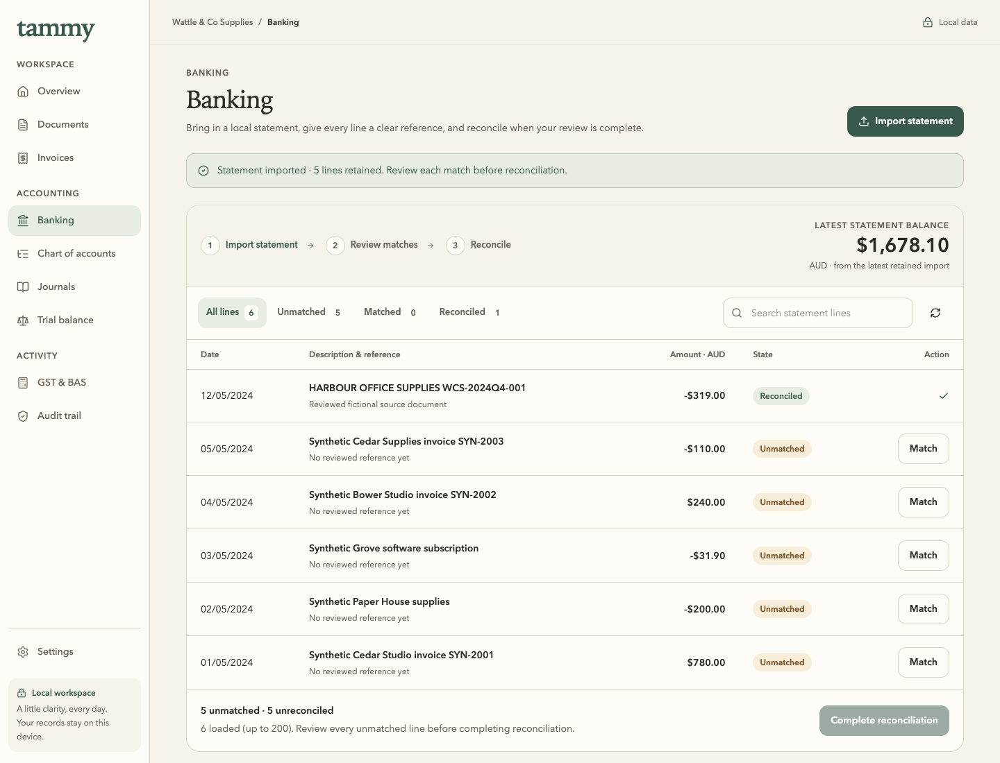
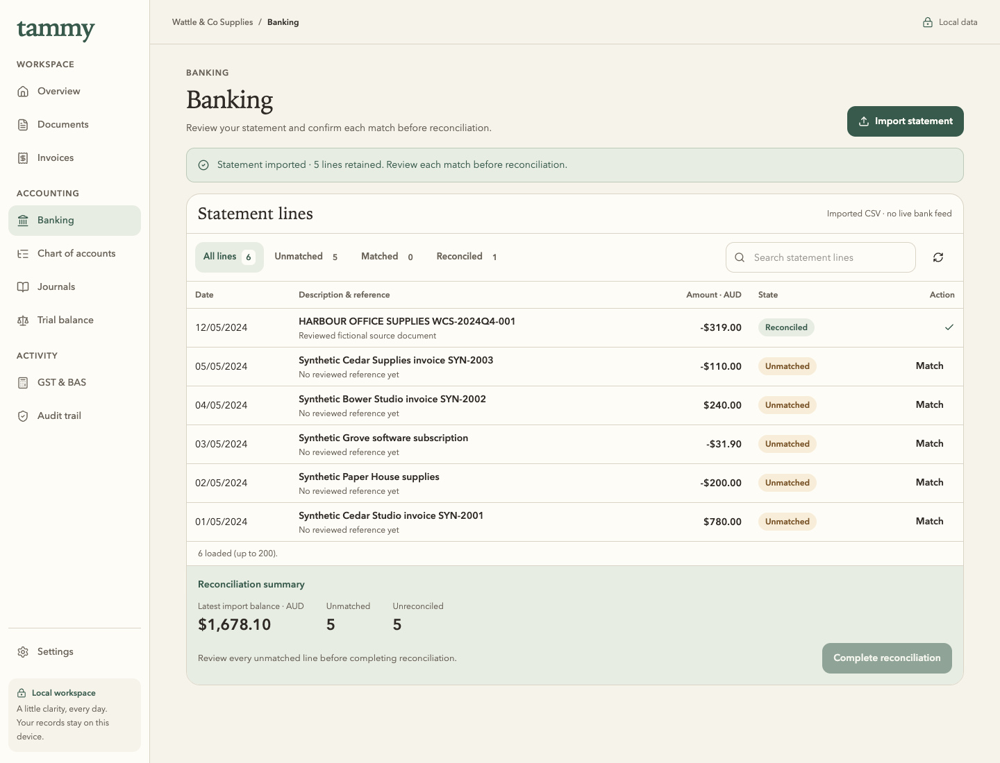
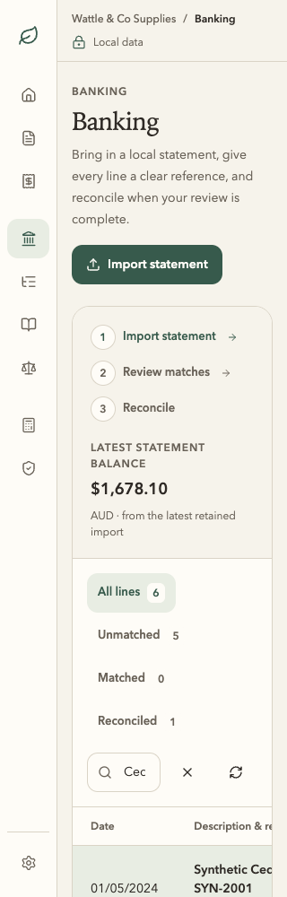
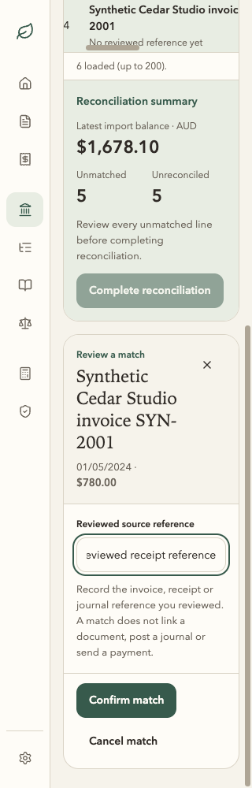

56px rows · 44px minimum controls · forest actions · explicit matching.
The figures are actual global pending counts and the latest imported statement balance. The app adds no live feed, automatic match, document link, journal or payment. Financial handlers and the reconciliation gate are unchanged.
Statement list before selecting a line




320px · visible focus and natural page scrolling






Import, validation and confirmed states
| Journey milestone | Before | After |
|---|---|---|
| Malformed CSV; retained input | Original | Corrected layout |
| Explicit import review | Original | Corrected layout |
| Confirmed reviewed reference | Original | Corrected layout |
| No search results | Original | Corrected layout |
| All new lines matched | Original | Corrected layout |
| Reconciliation confirmed | Original | Corrected layout |